Astrophotography › All targets
All targets
167 deep-sky targets photographed with a ZWO Seestar S30 Pro: galaxies, nebulae and clusters, each with its raw stack, conditioned render and a place on the sky dome. Open the album.
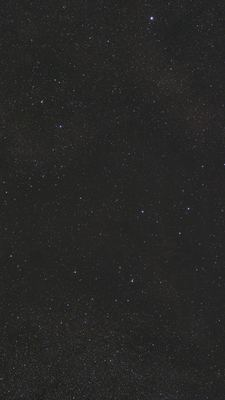
28 AquilaeStar · Aquila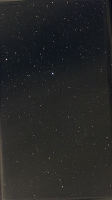
68 HerculisStar (eclipsing binary) · Hercules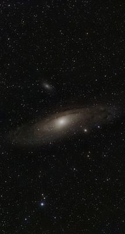
Andromeda GalaxyGalaxy · Andromeda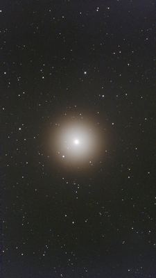
ArcturusStar (K1.5 giant) · Boötes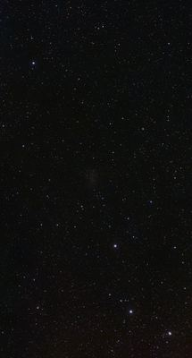
Barnard's GalaxyGalaxy · Sagittarius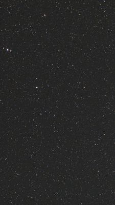
Blinking PlanetaryPlanetary Nebula · Cygnus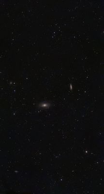
Bode's GalaxyGalaxy · Ursa Major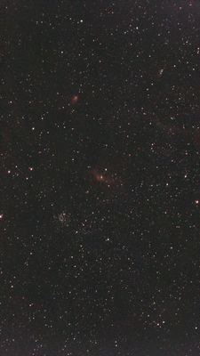
Bubble NebulaEmission Nebula · Cassiopeia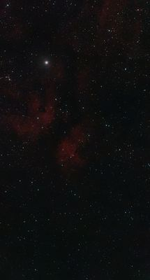
Butterfly Nebula (Sadr Region)Emission Nebula · Cygnus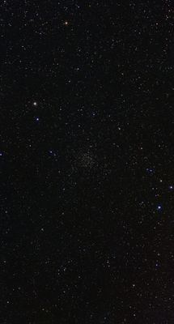
Caroline's RoseOpen Cluster · Cassiopeia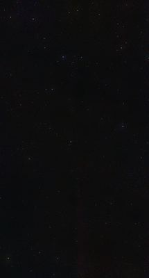
Cat's Eye NebulaPlanetary Nebula · Draco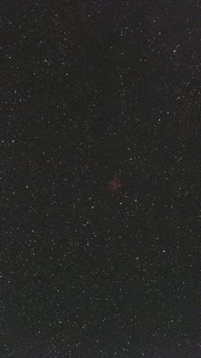
Cocoon NebulaCluster + Nebula · Cygnus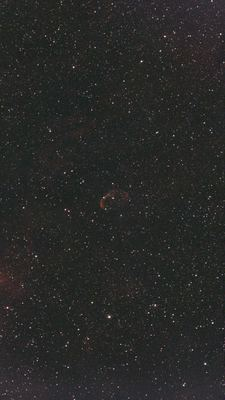
Crescent NebulaEmission Nebula · Cygnus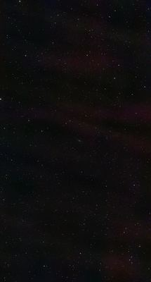
Deer Lick GroupGalaxy · Pegasus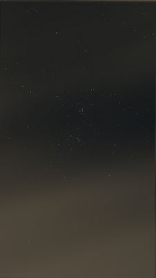
Double Cluster (chi Persei)Open Cluster · Perseus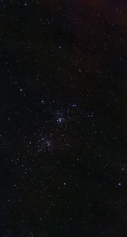
Double Cluster (h Persei)Open Cluster · Perseus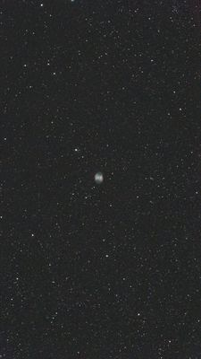
Dumbbell NebulaPlanetary Nebula · Vulpecula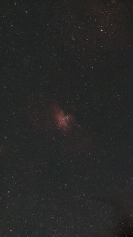
Eagle NebulaOpen Cluster + Nebula · Serpens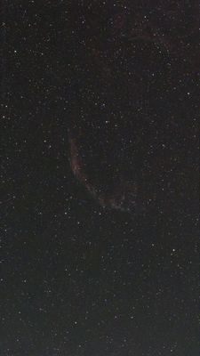
Eastern Veil NebulaSupernova Remnant · Cygnus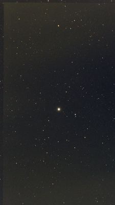
Field 03h02m +89.5°Sky Field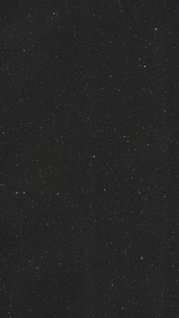
Field 17h32m +31.1°Sky Field · Hercules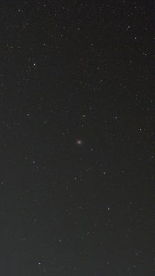
Field 17h39m −3.2°Sky Field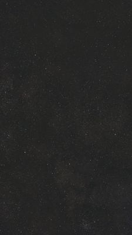
Field 17h56m −18.1°Sky Field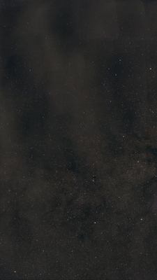
Field 18h01m −27.0°Sky Field · Sagittarius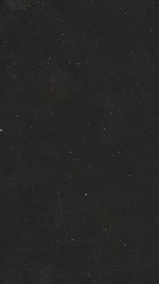
Field 18h26m −7.7°Sky Field · Scutum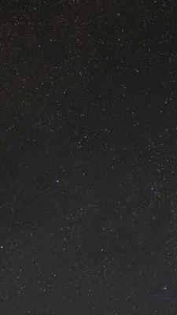
Field 18h28m −17.4°Sky Field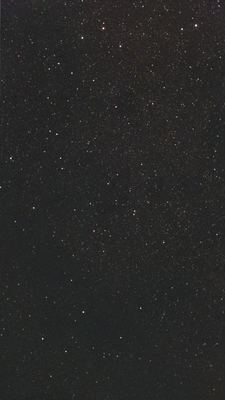
Field 18h34m −13.3°Sky Field · Sagittarius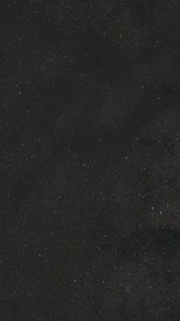
Field 18h41m −14.4°Sky Field · Scutum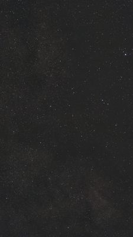
Field 18h59m +1.1° (Gaia 4268620287278693120)Sky Field · Aquila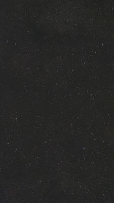
Field 19h13m +9.2°Sky Field · Aquila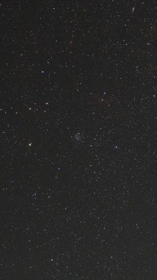
Field 23h26m +61.7°Sky Field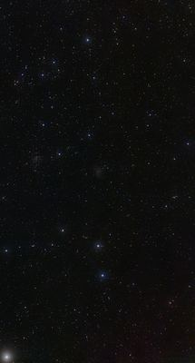
Fireworks GalaxyGalaxy · Cepheus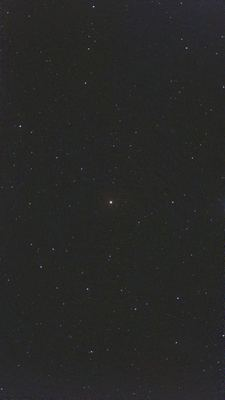
g HerculisStar (M6III, semi-regular variable) · Hercules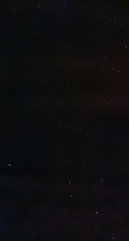
Gamma Coronae AustralisStar · Corona Australis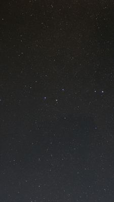
Gamma ScutiStar · Scutum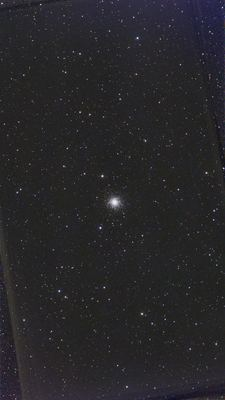
Hercules Globular ClusterGlobular Cluster · Hercules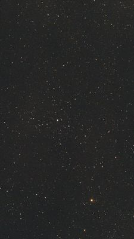
HIP 106890Star · Cepheus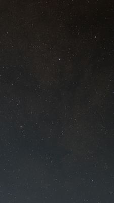
HIP 88060Star · Sagittarius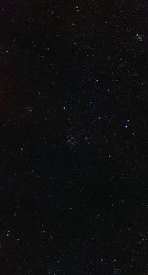
Horseshoe ClusterOpen Cluster · Cassiopeia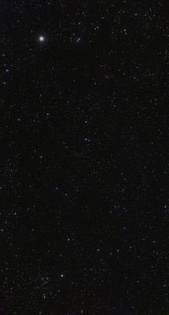
IC10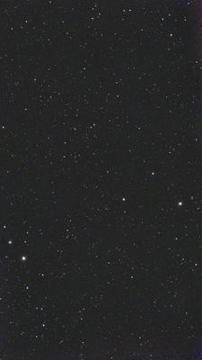
IC1171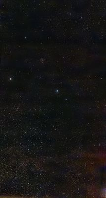
IC1287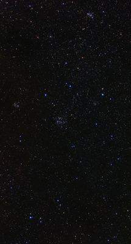
IC166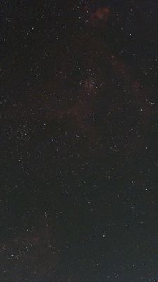
IC1805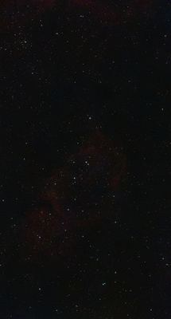
IC1848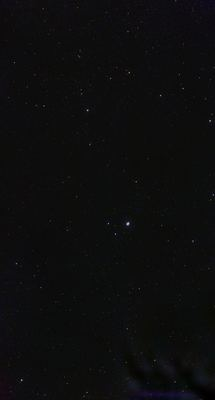
IC4592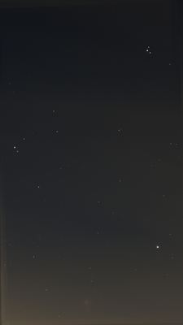
IC4604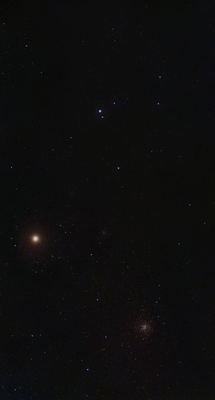
IC4605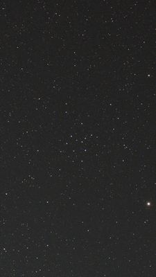
IC4665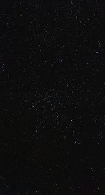
IC4756- Iris NebulaReflection Nebula · Cepheus
- JupiterPlanet
- Kaus BorealisStar · Sagittarius
- Kornephoros (Beta Herculis)Star · Hercules
- Lagoon NebulaEmission Nebula · Sagittarius
- Lost-in-Space GalaxyGalaxy · Draco
- M10Globular Cluster · Ophiuchus
- M100Galaxy · Coma Berenices
- M12Globular Cluster · Ophiuchus
- M14Globular Cluster · Ophiuchus
- M15Globular Cluster · Pegasus
- M2Globular Cluster · Aquarius
- M23Open Cluster · Sagittarius
- M25Open Cluster · Sagittarius
- M26Open Cluster · Scutum
- M29Open Cluster · Cygnus
- M3Globular Cluster · Canes Venatici
- M39Open Cluster · Cygnus
- M5Globular Cluster · Serpens
- M52Open Cluster · Cassiopeia
- M56Globular Cluster · Lyra
- M62Globular Cluster · Ophiuchus
- M71Globular Cluster · Sagitta
- M75Globular Cluster · Sagittarius
- M92Globular Cluster · Hercules
- Milky WayGalactic Region · Sagittarius
- MoonMoon
- NeptunePlanet
- NGC 129Open Cluster · Cassiopeia
- NGC 188Open Cluster · Cepheus
- NGC 6383Open Cluster · Scorpius
- NGC 6539Globular Cluster · Serpens
- NGC 654Open Cluster · Cassiopeia
- NGC 6624Globular Cluster · Sagittarius
- NGC 6664Open Cluster · Scutum
- NGC 6712Globular Cluster · Scutum
- NGC 6742Planetary Nebula · Draco
- NGC 6755Open Cluster · Aquila
- NGC 6791Open Cluster · Lyra
- NGC 6834Open Cluster · Cygnus
- NGC 6866Open Cluster · Cygnus
- NGC 6939Open Cluster · Cepheus
- NGC 7063Open Cluster · Cygnus
- NGC 7142Open Cluster · Cepheus
- NGC 7209Open Cluster · Lacerta
- NGC 7261Open Cluster · Cepheus
- NGC185
- NGC4236
- NGC5965
- NGC6229
- NGC6401
- NGC6440
- NGC6469
- NGC6535
- NGC6568
- NGC6604
- NGC6605
- NGC6625
- NGC6629
- NGC6633
- NGC6642
- NGC6645
- NGC6683
- NGC6704
- NGC6709
- NGC6716
- NGC6738
- NGC6743
- NGC6760
- NGC6781
- NGC6802
- NGC6811
- NGC6819
- NGC6823
- NGC6871
- NGC6940
- NGC7039
- NGC7082
- NGC7160
- NGC7243
- NGC7686
- North America NebulaEmission Nebula · Cygnus
- OCl 1039Open Cluster · Sagittarius
- Omega NebulaEmission Nebula · Sagittarius
- Omicron CassiopeiaeStar · Cassiopeia
- Owl ClusterOpen Cluster · Cassiopeia
- Owl NebulaPlanetary Nebula · Ursa Major
- Pacman NebulaEmission Nebula · Cassiopeia
- Pinwheel GalaxyGalaxy · Ursa Major
- PlutoDwarf Planet
- PolarisStar (F7Ib supergiant) · Ursa Minor
- Ring NebulaPlanetary Nebula · Lyra
- Sagittarius ClusterGlobular Cluster · Sagittarius
- Sagittarius Star CloudStar Cloud · Sagittarius
- SaturnPlanet
- Seginus (Gamma Bootis)Star · Bootes
- Silver Sliver GalaxyGalaxy · Andromeda
- Spindle GalaxyGalaxy · Draco
- Splinter GalaxyGalaxy · Draco
- SunStar
- Sunflower GalaxyGalaxy · Canes Venatici
- Theta DraconisStar · Draco
- ThubanStar (A0III, former pole star) · Draco
- Trifid NebulaEmission/Reflection Nebula · Sagittarius
- Trumpler 34Open Cluster · Scutum
- Ursa MajorConstellation · Ursa Major
- V1331 AquilaeStar · Aquila
- V379 VulpeculaeStar · Vulpecula
- V3879 SagittariiVariable Star · Sagittarius
- V430 ScutiStar · Scutum
- V4381 SagittariiVariable Star · Sagittarius
- VegaStar (A0V) · Lyra
- VenusPlanet
- Western Veil NebulaSupernova Remnant · Cygnus
- Whirlpool GalaxyGalaxy · Canes Venatici
- Wild Duck ClusterOpen Cluster · Scutum
- Wizard NebulaEmission Nebula · Cepheus
Deep-sky data from OpenNGC (CC-BY-SA 4.0).